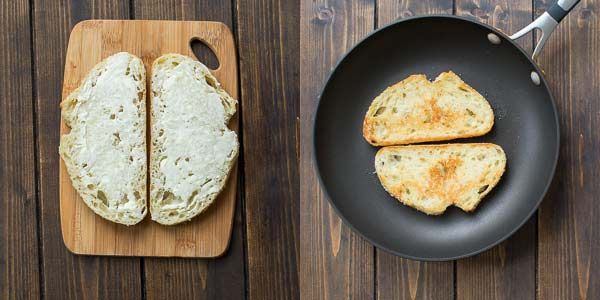
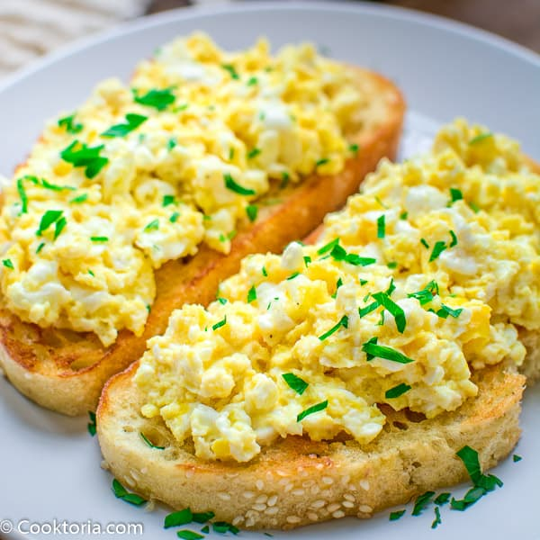

Egg toast

This Scrambled Egg Toast is so easy to make, filling, and so incredibly tasty, that it is going to make your morning better. Guaranteed.
Good morning, friends! I have a special breakfast treat for you today – The Best Scrambled Egg Toast recipe! It is one of the most loved recipes in my family and for a good reason. It is SCRUMPTIOUS! What could be a better way to start your day than a tasty scrambled egg on top of crunchy, buttery toast?
Ingredients
- Bread
- Butter
- Eggs
- Feta Cheese
- Fresh dill or parsley to garnish
Instructions
- Spread a thin layer of softened butter on both sides of the bread. Fry the bread over medium heat for about 2 minutes on each side, until a golden crust forms.

- Remove the bread from the frying pan and add ½ tbsp. of butter. Add the eggs and feta cheese and cook, stirring often, for about 3-4 minutes, until the eggs are cooked through.

- Divide the eggs between the bread slices and sprinkle them with freshly chopped dill or parsley.

- Make yourself a cup of coffee and enjoy The Best Scrambled Egg Toast.
